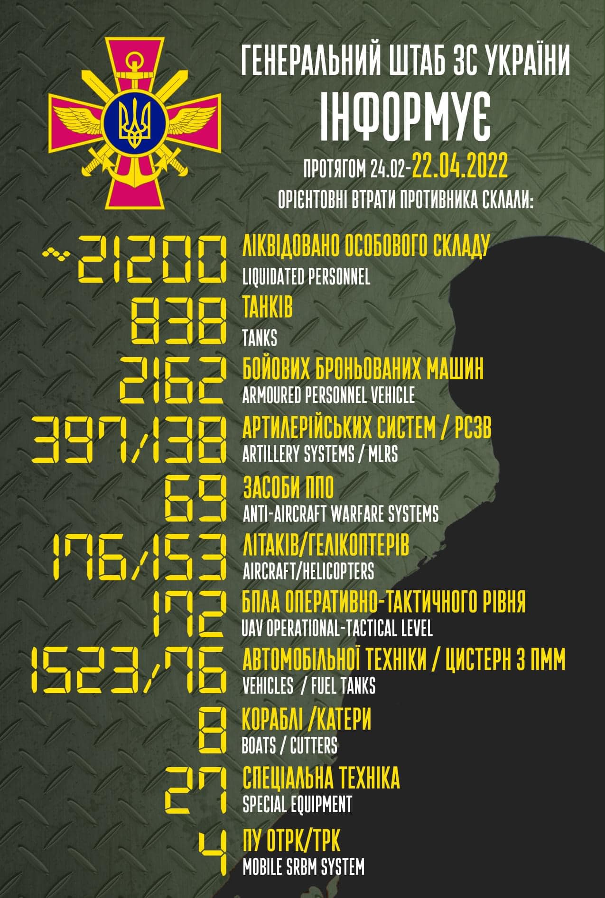
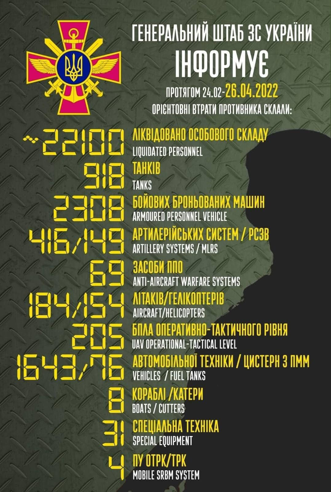

Загальні бойові втрати противника з 24.02 по 22.04 орієнтовно склали
/ The total combat losses of the enemy from 24.02 to 22.04 were approximately:
особового складу / personnel - близько/ about 21200 осіб ліквідовано / persons were liquidated,
танків / tanks ‒ 838 од,
бойових броньованих машин / APV ‒ 2162 од,
артилерійських систем / artillery systems – 397 од,
РСЗВ / MLRS - 138 од,
засоби ППО / Anti-aircraft warfare systems - 69 од,
літаків / aircraft – 176 од,
гелікоптерів / helicopters – 153 од,
автомобільної техніки / vehicles - 1523 од,
кораблі /катери / boats / cutters - 8 од,
цистерн з ПММ / fuel tanks - 76,
БПЛА оперативно-тактичного рівня / UAV operational-tactical level - 172.
Спеціальна техніка / special equipment - 27.
Пускові установки ОТРК/ТРК / mobile SRBM system - 4.
Дані уточнюються / Data are being updated
У Бучі закінчується збір та ексгумація тіл загиблих Про це повідомив міський голова Бучі Анатолій Федорук.
На сьогодні у місті знайдено 412 загиблих від російської агресії, але цю цифру все ще будуть уточнювати на рівні слідчих та експертів.
В окрему справу виділена братська могила коло Церкви Андрія Первозванного, де загалом дістали 117 тіл, зокрема 30 жінок та 2 дитини. Там є вбиті, застрелені і закатовані окупантами, є обгорілі тіла цивільних громадян.
Є пацієнти лікарні, яких не змогли поховати після 24 лютого, бо росіяни не пускали ритуальну службу на цвинтар. Є кілька хлопців зі Збройних Сил України. Тепер головне завдання – ідентифікувати кожного.
"Вы инвестируете в глупость
"Я сказал ему: Вам 63 года, мне 93 года. Скажите, что вы хотите достичь в ближайшие 30 лет? За что вы боретесь? Вы надеетесь, позлить Америку?
Он говорит: Нет
Америка хочет часть России? Нет. У вас есть проблемы недопонимания с Обамой?
Он говорит: А почему вы спрашиваете?
Я сказал: Послушайте, я не шпион, вы можете говорить со мной обо всем.
Он говорит: Что вы думаете?
И я сказал: Америка выиграет, независимо от того, что вы делаете.
Почему? – спросил он.
Потому что они счастливы, а вы – нет.
Я сказал ему дальше.
Когда американец просыпается утром, что он видит? Мексика на юге, и они принимают мексиканцев в своей стране. Канада на севере, они являются лучшими друзьями в мире. А справа и слева есть рыба в воде. О чем Обама должен беспокоиться?
Вы, вы просыпаетесь утром, кого вы имеете по соседству? Япония, Китай, Афганистан? Мой Бог! Они знают, что у вас есть много земли, и вы не даете им ни копейки. У вас есть 20 процентов пресной воды, и вы ничего не даете. Так что, когда снег в Сибири растает, первое, кого вы там увидите – китайцы. Потому что на востоке много китайцев и не так много русских.
Второе, что я сказал ему, было:
У Америки лучшее соотношение между размером земли и размером народа. У вас – худшее. Двадцать миллионов квадратных километров. Мой Бог! Но у вас нет столько людей. Ваши люди умирают. Не обольщайтесь аплодисментами и тем, что люди говорят. Они не простят вас. Почему русские живут только 62 года, в то время как американцы будут жить до 82-х лет?
И тогда я сказал ему: Вы ведете себя как царь.
Я сказал: Что делали цари? Они отстроили два города, Санкт-Петербург и Москву, как витрину.
Что бы вы ни пожелали, вы найдете там. Остальная часть России, как Нигерия, покрытая снегом. Ваши люди умирают. Вы не даете им жизнь. Вы думаете, что они простит вас?
Почему Америка прекрасна? – спросил я его.
Потому что они дарители. Почему у Европы проблемы? Потому что они берущие. Америка дает. Люди думают, что это потому, что они щедры. Я думаю, это потому, что они мудры. Если вы даете, вы создаете друзей. Самая полезная инвестиция – заводить друзей.
Америка имела мужество принять план Маршалла, огромный кусок своего ВВП они дали этой умирающей Европе. И таким образом, они показали, что это лучшая инвестиция в мире.
Там нет ни одной европейской страны, которая не была империей. Французы и англичане, португальцы, все. И что случилось? Они были выброшены оттуда и остались ни с чем. Англия, самая большая империя от восхода до заката, все океаны, и ненасильственные индийцы вышвырнули их и оставили их ни с чем, кроме трех маленьких островов, с которыми они не знают, что делать.
Поверьте мне, сказал я Путину, враги и вражда являются самыми большими потерями в жизни.
Вы инвестируете в глупость."
Окупанти закінчують перегрупування військ і готуються до масштабного наступу
російська армія на сьогодні закінчує перегрупування військ та намагається визначити найбільш вразливі місця ЗС України, щоб почати широкомасштабний наступ у Донецькому операційному районі.
Про це представник Головного управління розвідки Міністерства оборони України Вадим Скібіцький повідомив у ефірі національного телемарафону.
“Противник закінчує перегрупування військ. Всі батальйонно-тактичні групи, які до цього часу були зосереджені на території білорусі, біля наших північних кордонів, зараз перекидаються на схід України. Це по-перше. А по-друге, противник зараз по всіх напрямках намагається визначити найбільш вразливі місця Збройних Сил України для того, щоб почати широкомасштабний наступ і закріпити свій успіх, насамперед у Донецькому операційному районі”, – зазначив Вадим Скібіцький.
Щодо повідомлень про нібито рішення окупантів припинити штурм “Азовсталі” у Маріуполі, представник ГУР МО України зазначив, що, за даними воєнної розвідки, російське керівництво, як завжди, говорить неправду.
“За даними Головного управління розвідки, як завжди, російське керівництво говорить неправду. Так, дійсно, вони можуть відмовитись від широкомасштабного штурму саме цього об’єкта, але, за нашими даними, вони планують залучити росгвардію, планують залучити інші структури, в тому числі структури ФСБ, які будуть продовжувати наступ саме на завод “Азовсталь” для того, щоб знищити наш спротив”, – прокоментував представник ГУР МО України.

Загальні бойові втрати противника з 24.02 по 26.04 орієнтовно склали
/ The total combat losses of the enemy from 24.02 to 26.04 were approximately:
особового складу / personnel - близько/ about 22100 (+200) осіб ліквідовано / persons were liquidated,
танків / tanks ‒ 918 (+34) од,
бойових броньованих машин / APV ‒ 2308 (+50) од,
артилерійських систем / artillery systems – 416 (+5) од,
РСЗВ / MLRS - 149 (+0) од,
засоби ППО / Anti-aircraft warfare systems - 69 (+0) од,
літаків / aircraft – 184 (+3) од,
гелікоптерів / helicopters – 154 (+0) од,
автомобільної техніки / vehicles - 1643 (+77) од,
кораблі /катери / boats / cutters - 8 (+0) од,
цистерн з ПММ / fuel tanks - 76 (+0),
БПЛА оперативно-тактичного рівня / UAV operational-tactical level - 205 (+4).
Спеціальна техніка / special equipment - 31 (+3).
Пускові установки ОТРК/ТРК / mobile SRBM system - 4 (+0).
Доба героїчного протистояння Українського народу російському воєнному вторгненню: ситуація станом на ранок 27 квітня
Найбільша активність угруповання окупаційних військ спостерігається на Слобожанському та Донецькому напрямках. Противник доукомплектовує свої підрозділи, що зазнали втрат під час бойових дій, технікою. Зокрема, за рахунок зняття її зі зберігання на складах та базах військових округів. Транспортування техніки на територію України здійснюється зазвичай залізничним транспортом.
Окупанти продовжують завдавати ракетних ударів по житлових кварталах на території України.
На Ізюмському напрямку противник проводить наступальні дії у напрямку Барвінкового, оволодів північно-східною околицею населеного пункту Велика Комишуваха, а також взяв під контроль населений пункт Заводи.
На Донецькому напрямку підрозділи ворога ведуть активні дії практично вздовж всієї лінії зіткнення. Основні зусилля противника зосереджені на веденні наступальних дій на Сєверодонецькому, Попаснянському і Курахівському напрямках з метою взяття під повний контроль Попасної, Рубіжного та розвитку наступу на Лиман, Сєверодонецьк і Слов’янськ.
На Лиманському напрямку противник встановив контроль над населеним пунктом Зарічне, здійснював штурмові дії у районі населеного пункту Ямпіль.
На Сєверодонецькому напрямку загарбники встановили контроль над населеним пунктом Новотошківське, ведуть наступ у напрямку населених пунктів Нижнє та Оріхове.
На Маріупольському напрямку ворог здійснює масований вогневий вплив та блокування наших підрозділів в районі заводу “Азовсталь”. У місті окупанти продовжують проводити фільтраційні заходи стосовно цивільного населення. На Південнобузькому та Таврійському напрямках противник зосереджує основні зусилля на утриманні зайнятих раніше рубежів та здійсненні вогневого впливу на позиції наших військ. На Миколаївському, Криворізькому і Запорізькому напрямках ворог намагається покращити своє тактичне положення. З цією метою здійснює перегрупування підрозділів, нарощує систему вогневого ураження, а також проводить повітряну розвідку.
Нашими воїнами за попередню добу було уражено сім повітряних цілей: літак Су-25, вертоліт Ка-52, три БПЛА оперативно-тактичного рівня та дві крилаті ракети.
Тільки на території Донецької та Луганської областей за минулу добу відбито дев’ять атак ворога, знищено дев’ять танків, одинадцять артилерійських систем, чотири одиниці спеціальної та сімнадцять одиниць броньованої техніки, три одиниці спеціальної інженерної та шістнадцять одиниць автомобільної техніки, чотири паливозаправники та одну зенітну установку. Військово-транспортна, винищувальна, бомбардувальна і штурмова авіація Повітряних Сил ЗСУ продовжує виконання завдань у повітряному просторі України. Під час раптових авіанальотів російські окупанти зазнають суттєвих втрат на своїх позиціях. Внаслідок повітряних ударів знищено чимало техніки та живої сили ворога.
Окупанти збільшують темпи наступу та нарощують ракетні війська на кордоні з Україною
Найбільша активність окупантів спостерігається на Слобожанському та Донецькому напрямках, розповів на брифінгу речник Міноборони Олександр Мотузяник:
Основною метою противника залишається встановлення повного контролю над територією Донецької і Луганської областей та забезпечення стійкості сухопутного коридору з окупованою територією АР Крим.
Ворог нарощує темпи проведення наступальної операції. Практично на усіх напрямках агресор здійснює інтенсивний вогневий вплив.
Також окупанти нарощують угруповання ракетних військ у бєлгородській області рф. У районі Дегтярне, що в 30 км від кордону з Україною, розгорнуто батарею оперативно-тактичного ракетного комплексу «Искандер-М».